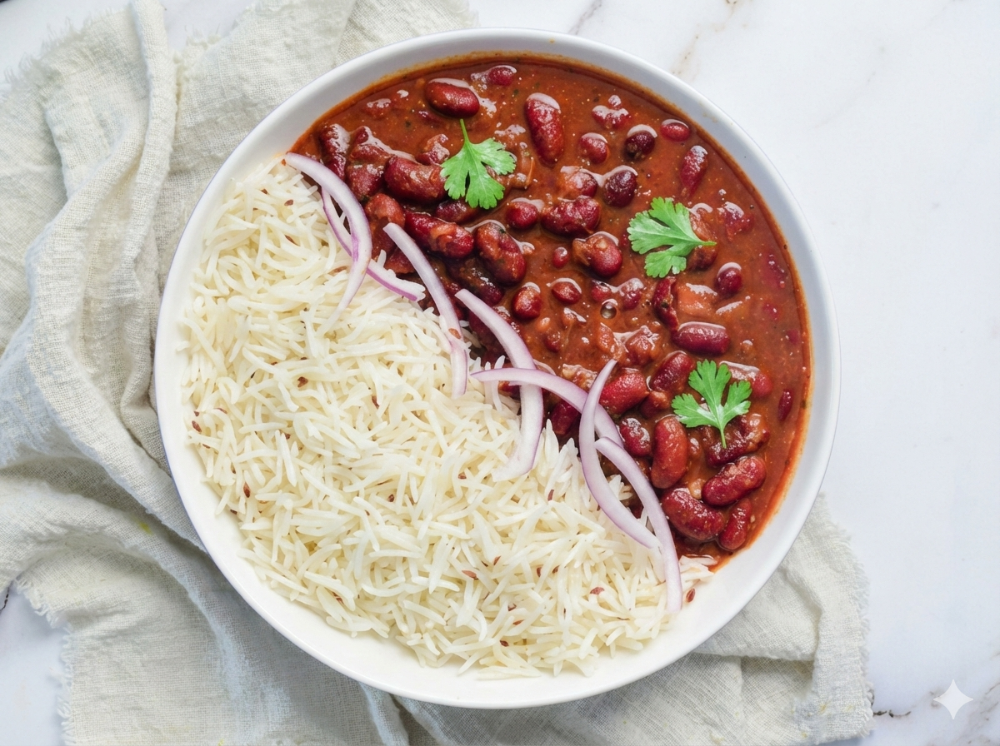

Rajma Chawal

Description
Rajma Chawal is a comforting Punjabi dish made with red kidney beans simmered in a spiced tomato-onion gravy, served over steamed basmati rice. It is a classic combination that is filling, nutritious, and loved for its homestyle flavors. Rajma Chawal is often considered the ultimate comfort food in North India.
Ingredients:
- 1 cup rajma (red kidney beans), soaked overnight
- 2 cups cooked basmati rice
- 2 medium onions, finely chopped
- 2 medium tomatoes, pureed
- 1 tablespoon ginger-garlic paste
- 2 green chilies, slit
- 1 teaspoon cumin seeds
- 1/2 teaspoon turmeric powder
- 1 teaspoon red chili powder
- 1 teaspoon garam masala
- 1 teaspoon coriander powder
- 2 tablespoons oil or ghee
- Salt to taste
- Fresh coriander leaves for garnish
Instructions
- Cook the rajma:
- Drain the soaked rajma and pressure cook with 3 cups of water and a little salt until soft (about 4–5 whistles).
- Set aside with the cooking liquid.
- Prepare the masala:
- Heat oil or ghee in a pan. Add cumin seeds and let them splutter.
- Add chopped onions and sauté until golden brown.
- Add ginger-garlic paste and green chilies, cook for 2 minutes.
- Add tomato puree and cook until the oil separates.
- Mix in turmeric, red chili powder, coriander powder, and salt.
- Combine rajma with masala:
- Add the cooked rajma along with its liquid to the masala.
- Simmer for 15–20 minutes, stirring occasionally, until the gravy thickens.
- Sprinkle garam masala and mix well.
- Serve with rice:
- Place hot steamed basmati rice on a plate.
- Pour the rajma curry over the rice.
- Garnish with fresh coriander leaves and serve warm.
Home